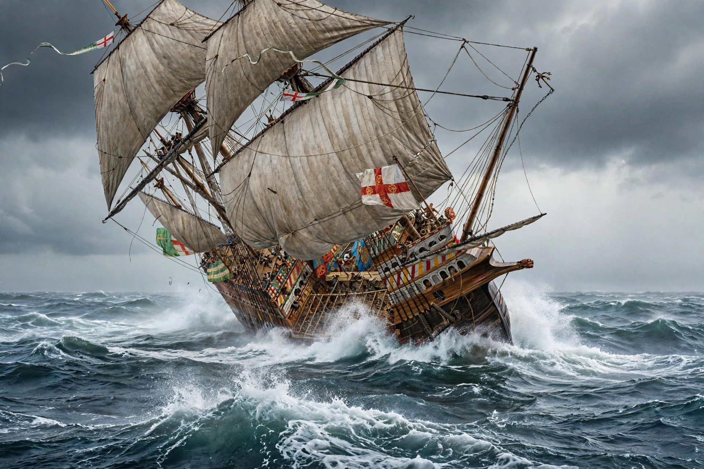

The Mary Rose was a carrack-type warship of the English Tudor navy of King Henry VIII. She served for 33 years in several wars against France, Scotland, and Brittany before sinking in the Solent in 1545 during the Battle of the Solent.

| History – England | |
|---|---|
| Laid down | 29 January 1510 |
| Launched | July 1511 |
| Fate | Sank 19 July 1545; raised 11 October 1982 |
| Location | Mary Rose Museum, Portsmouth |
Built in Portsmouth in 1510–1511, she was one of the first ships able to fire a full broadside. She was rebuilt in 1536, increasing her tonnage and armament.
On 19 July 1545 she heeled over and sank with the loss of most of her crew of over 400. The wreck was rediscovered in 1971 and raised in 1982 in a major maritime archaeology project watched by millions. Thousands of artefacts were preserved.
The hull is displayed at the Mary Rose Museum in Portsmouth Historic Dockyard, opened in its current form in 2016. See also Mary of Teck.